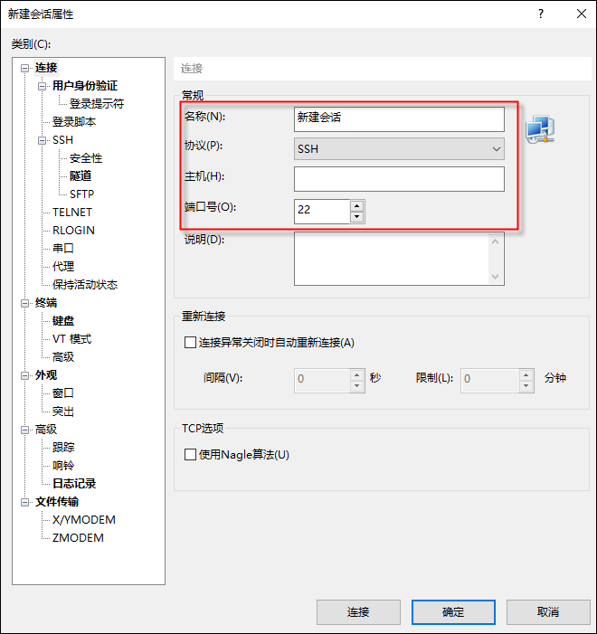

SSH提供了一种更安全的机制来供用户远程管理NGFW。在SSH连接中，所有的数据都是经过加密后传输，这就保证了NGFW的关键信息（如密码等）在传输过程中不会被窃听而导致泄露。相比于Telnet传输方式，SSH传输的数据经过加密，更有效的防止了“中间人”攻击、DNS欺骗和IP欺骗；另外经由SSH连接传输的数据经过压缩后传输速度更快。
用户可以在本地主机上使用支持SSH的客户端软件，如OpenSSH、Xshell、Windows Terminal等。登录之前需要确保本地主机与NGFW的网络连通，NGFW开启了对本地主机的SSH管理服务。NGFW与本地主机网络连通和开启NGFW的SSH管理服务操作由两种方式：
l方式一（命令配置）：相关配置命令详见 通过Console口登录。
l方式二（WEB配置）：相关配置步骤详见 通过浏览器登录。
通过SSH方式登录NGFW的操作步骤如下：
| 步骤1 | 在管理主机中打开终端软件（以XShell为例）。 |
| 步骤2 | 新建连接，连接“协议”选择“SSH”，“主机”设置NGFW的IP地址，“端口号”设置为“22”。 |

| 步骤3 | 连接参数设置完成后，点击【确定】可进入NGFW的CLI界面。 |